TF6280 EtherNet/IP アダプタによるIPCのEthernetポートを使った通信¶
おおまかな流れ
アダプタのIO設定
EtherNet/IP専用タスクの作成
IO Assembly作成
TwinCAT PLCの変数とのリンク
設定したノードのEDSファイルをエクスポート
スキャナへの設定
アダプタのIO設定¶
ソリューションウィンドウからTwinCATツリーの
I/O>Devicesのポップアップメニューを出現させ、EtherNet/IP Adapter (Slave) を選びOKボタンを押します。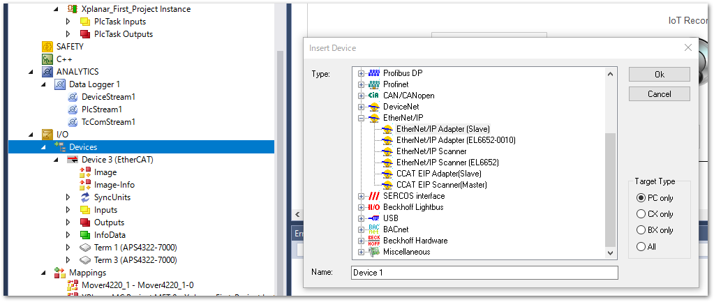
Device * (TC3 EIP Adapter)ツリーが出現します。これを線悪してAdapterタブからEtherNet/IPの通信を行うIPCのAdapterのポートを選択する設定を行います。Tip
XAEをターゲットIPCに接続した状態でおこなってください。
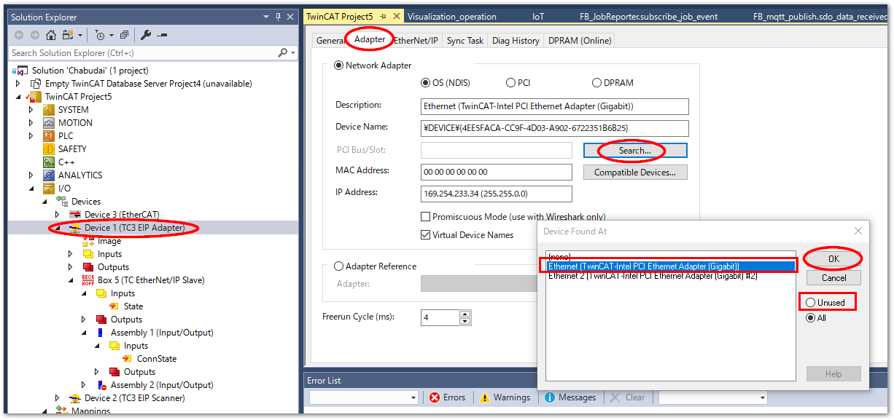
BOX * (TC EtherNet/IP Slave)ツリーを選択し、Settingタブから、8000:0 Slave Settings (BOX *)ツリーを展開し、IP Address, Network Mask, Gateway Address をそれぞれ設定します。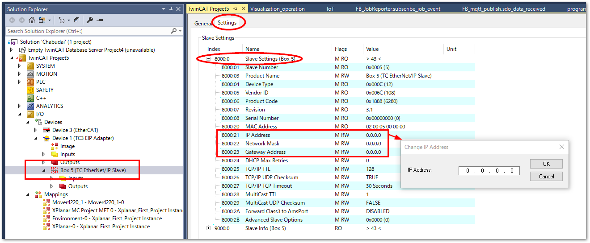
設定アドレス
振る舞い
0.0.0.0
DHCPによる自動割り当てに従います
255.255.255.255
Windows のネットワークアダプタのオプションで設定したIPアドレスに従います。
任意のIPアドレスとサブネット
任意のIPアドレスとしてふるまいます。
EtherNet/IP専用タスクの作成¶
PLCとリンクしたEtherNet/IPのアダプタIOは、通常スキャナのサイクルによりIOが更新されます。しかし、PLCタスクに依存したままですと、PLCが停止中や、ブレークポイント停止されている間、スキャナとアダプタとの接続が切断されてしまい、スキャナ側から通信異常として認識されてしまいます。
これを防止するため、EtherNet/IP専用タスクを作成し、アダプタにそのタスクを割り当てる設定を行います。
タスクを作成します。
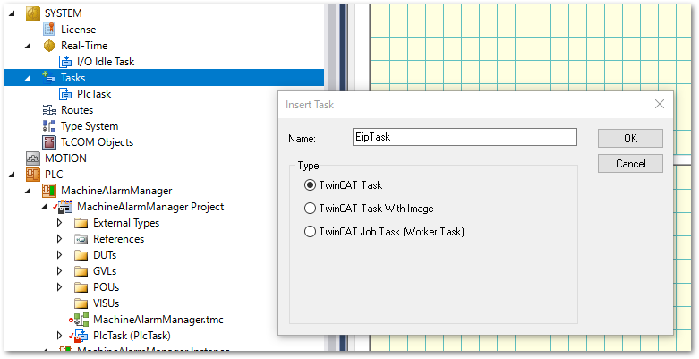
次に、I/Oツリーの
Device (TC3 EIP Adapter)を選択し、SyncTaskタブを開き、次の通り設定します。- Settings
Special Sync Taskを選択し、作成した EipTask を選びます。
- Sync Task
Cycle ticksに1を設定します。これはEtherNet/IPの最小サイクルタイムが1msであるためです。スキャナ側のサイクルタイムに合わせて設定してください。
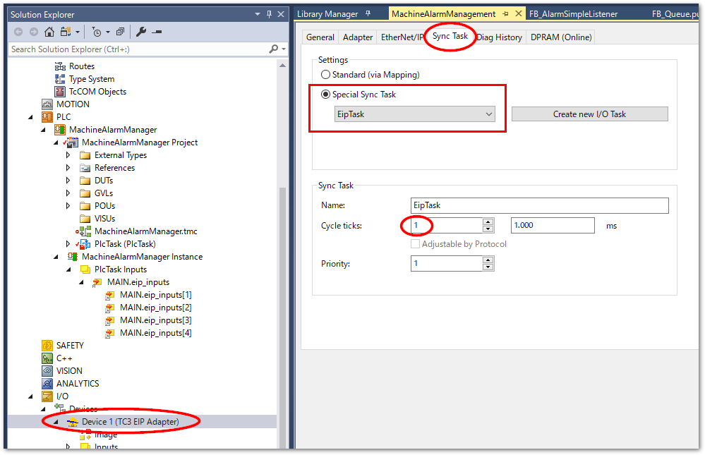
IO Assembly作成¶
インプリシットデータとして周期通信を行う入出力データのオブジェクトをIO Assemblyと呼びます。ここではIO Assemblyの構成設定を通じて入力、出力それぞれのデータ構造の定義を行います。コネクションはIO Assembly単位で生成されますので、前述のとおりIO Assemblyごとに入出力合わせて上限 502Byte までのデータが構成可能です。ただし、入力、出力双方において先頭には接続状態、および、制御を行うための4Byte（合計8Byte）のデータが割り当てられます。よって、正味ユーザが割り当てられるデータ領域は502-8=494Byteまでとなります。
これを越えるデータを送受信したい場合は、IO Assemblyに分ける必要があります。複数のコネクション（IO Assembly）を登録するをご参照ください。
BOX * (TC EtherNet/IP Slave)ツリー上でコンテクストメニューからAppend IO Assemblyを選択します。
Assembly 1 (Input/Output)ツリーのコンテキストメニューから
Add New Item...を選択します。
現われたウィンドウで、データ形式と転送するデータ数を選択します。同じデータ型を複数作りたい場合は、
multipleに数値を入れてください。変数名の最後が自動的に連番となる番号が付与されます。以下の例では ワード型の変数を 4 個、合計 8 バイトのプロセスデータを作成することを設定し、OKボタンを押します。

また、配列型を新たに作成することもできます。BYTE型をベースとした、16要素の配列を定義する例を下記に示します。
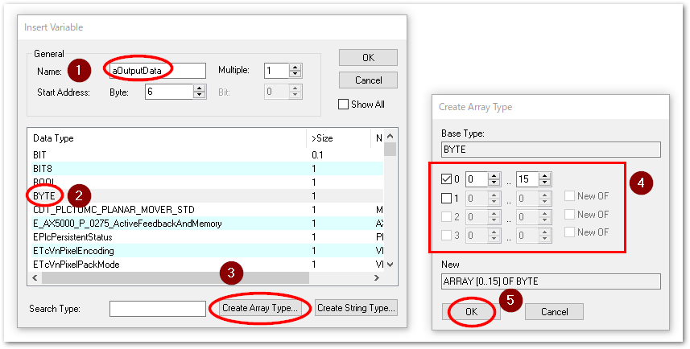
作成後、それぞれの
Nameを設定しなおす事もできます。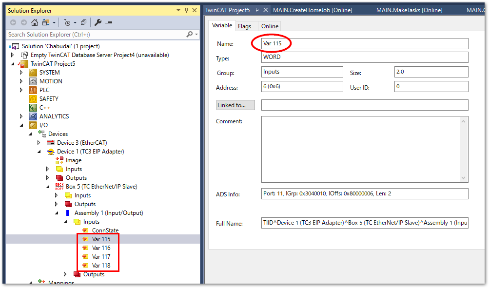
配列の場合は、子ツリーとなります。
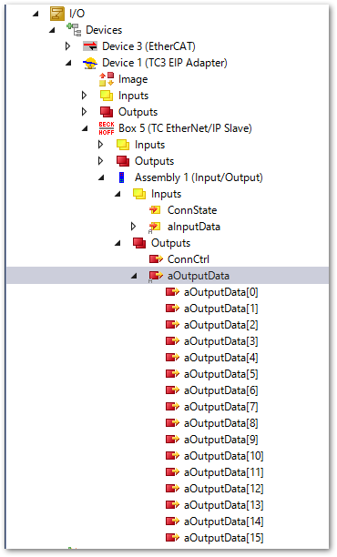
作成したプロセスデータのデータサイズは、
BOX * (TC EtherNet/IP Slave)ツリーを選択した際のSettingタブ内の8001:07にて確認することができます。502Byteを超えないようにご注意ください。
TwinCAT PLCの変数とのリンク¶
EtherCATのIOリンクと同様の手順となります。
下記の通りプログラム上で
AT%I*やAT%Q*装飾子を付加した変数宣言し、PLCプロジェクトをビルドします。PROGRAM MAIN VAR eip_inputs AT%I* : ARRAY [1..4] OF WORD; END_VAR
ビルド成功したら、PLCのプロジェクトに、
PLCプロジェクト名 instanceというツリーが出現します。これによりIOとの変数マッピングが可能になります。再度
IO Assembly以下の Input / Output ツリーを選択し、一覧に現れるEtherNet/IPのプロセスデータをひとつづつ選択して、PLC変数とマッピング操作を行います。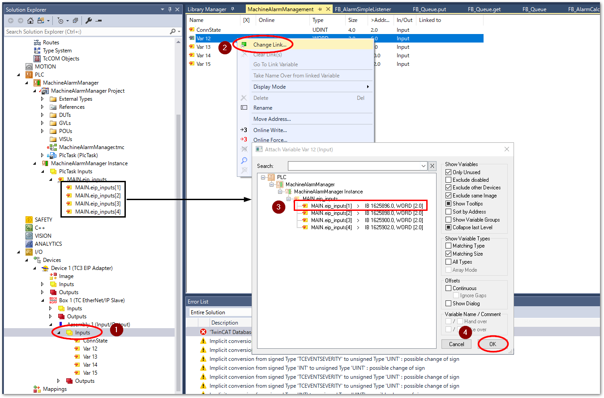
これにより、EtherNet/IPのスキャナで交換されるプロセスデータにより、サイクリックに処理されるTwinCAT PLC上の変数として取り扱う事が可能になります。
変数の型変換について
スキャナ側のデータ型の制約により、IO Assemblyに設定するデータ型が必ずしもPLCプログラム上のデータ型と一致しないケースも考えられます。この場合、データ型の変換が必要となります。この方法については実装例：構造体と共用体を使ったマッピングに掲載されているように、共用体を用いたマッピングを行ってください。
EDSファイルの出力¶
BOX * (TC EtherNet/IP Slave)のコンテキストメニューから、Export EDS Fileを選択します。確認ダイアログが出現しますが、いいえを選択してください。
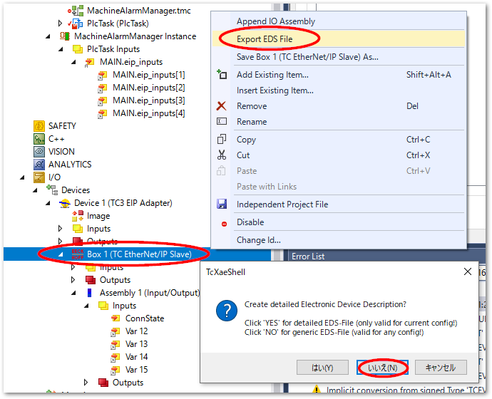
EDSの保存先を選択して名前を付けて保存します。
スキャナへの設定¶
Keyence等のPLC側の設定として、前項のEDSを読み込んで子局として登録してください。
ユニットエディタから、KV-8000 CPUユニット、または、KV-XLE0*などのEtherNet/IPに対応したインターフェースユニットを選択し、メニューから
EtherNet/IP設定(F)...を選びます。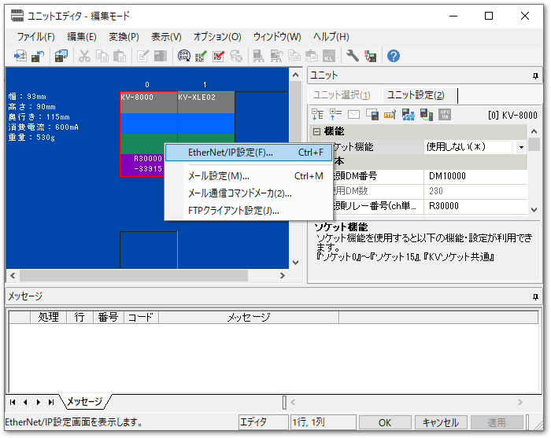
TwinCATで生成したEDSファイルを読み込みます。
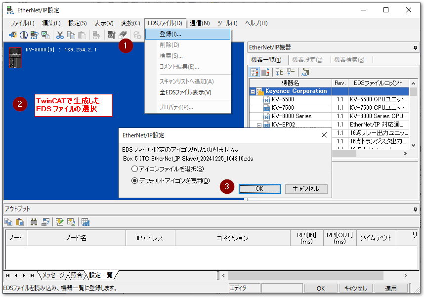
EtherNet/IP機器の一覧に、Beckhoff Automationのツリーの中にXAEで作成したアダプタが現われます。これをダブルクリックすると、アダプタとして登録されます。アダプタのIO設定で設定したアダプタのIPアドレスを設定します。
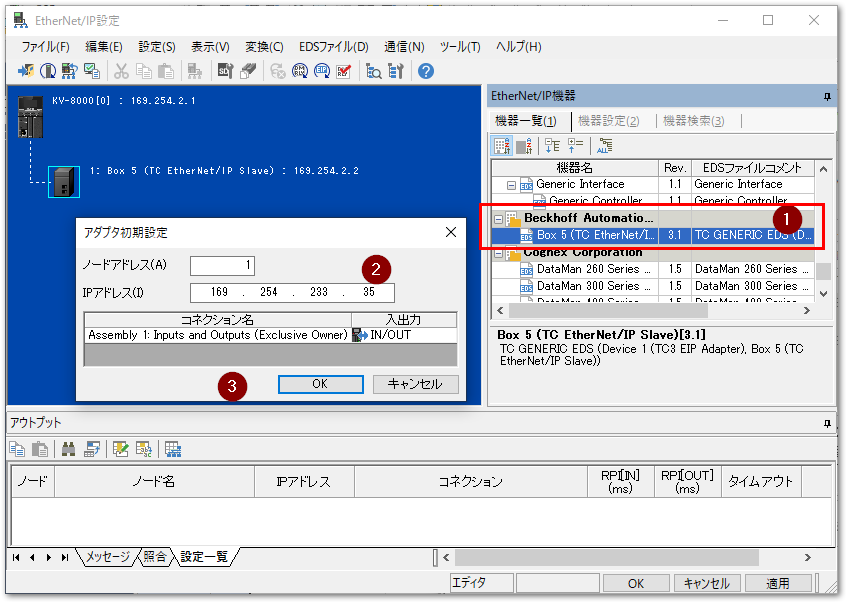
続いてコネクション設定を行います。アダプタを選択してコンテキストメニューから
コネクション設定(N)...を選んでください。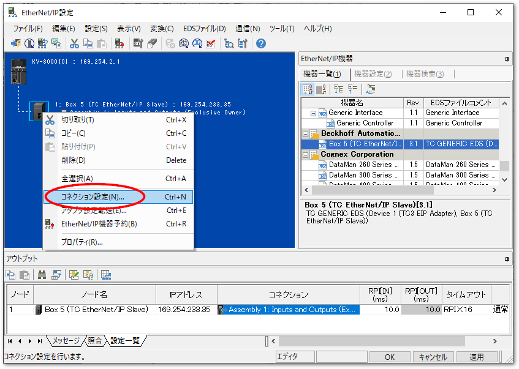
コネクション設定では、様々な通信パラメータを設定できますが、少なくとも次の2点を見直してください。
- PRI（通信周期）
最小\(1ms\)です。
- デバイス割付(D)…
EDSファイルで定義されたInput/Outputの変数をどのデバイスにマッピングするかの設定です。
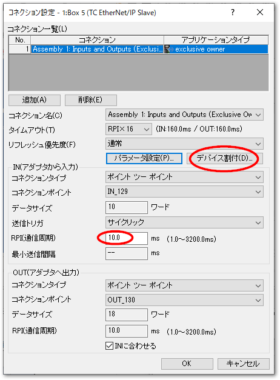
デバイス割付では、IN(アダプタから入力)と、OUT(アダプタ)の両方で、それぞれの変数サイズに合ったデバイスに割り当ててください。
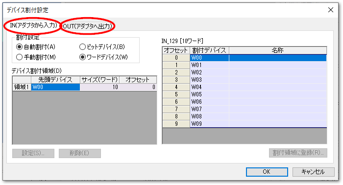
設定が完了したら各ウィンドウの
適用ボタンを押して設定を保存します。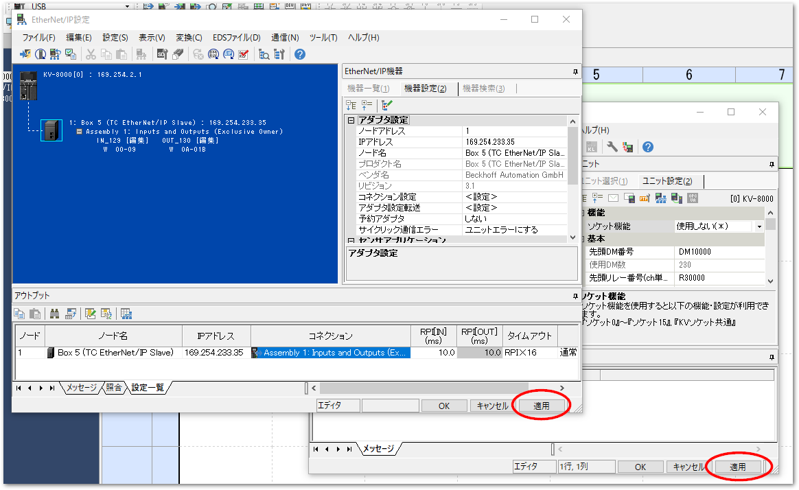
保存した設定をPLCにダウンロードします。
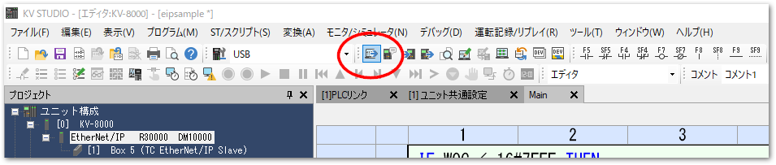
PLCがRUNし、アダプタとのEthernetの接続が正常であれば、ツリー上に現われるアダプタのアイコンに、緑色の丸印のオーバラップアイコンが描画されます。
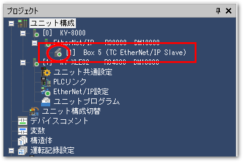
複数のコネクション（IO Assembly）を登録する¶
495Byteを越えるデータを送りたい場合、複数のIO Assemblyを作成する必要があります。この場合は、IO Assembly作成からの手順を繰り返してください。次のとおりPLCの変数とマッピングされたIO Assemblyが複数登録可能です。
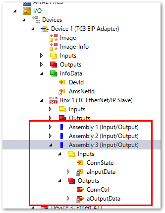
KV-8000側は次のとおり設定します。
IO Assemblyが追加された新しいEDSファイルを読み込みます。構成が上書きされます。
子局を選択し、コンテキストメニューからコネクション設定を選びます。
複数のIO Assemblyが設定されたEDSファイルを読み込むと、デフォルトでさいしょのIO Assemblyのみが有効となっています。その他のIO Assemblyを追加するには、
追加(A)ボタンを押します。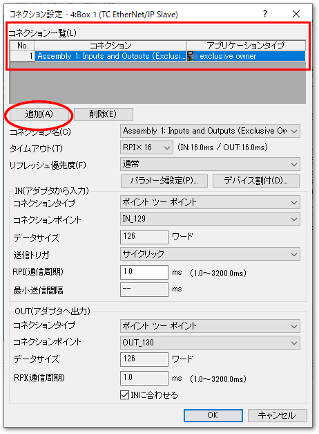
次図のとおり「有効なコネクションがありません」というダイアログがポッポアップされるまで追加ボタンを何度も押すと、EDSファイルに設定されている全てのIO Assemblyのコネクションがリストされます。
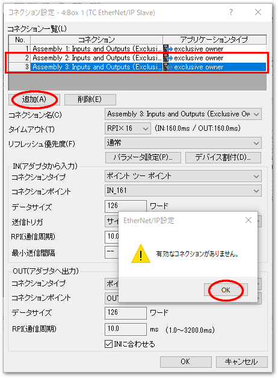
このように、複数のコネクションを登録することで、495Byte以上のデータを送受信することが可能になります。
警告
コネクションの単位であるIO Assembly毎にデータの同期が保証されます。複数のIO Assemblyを跨いでデータ同期性が必要な場合、PLCのロジックにて送受信間の同期処理をおこなってください。